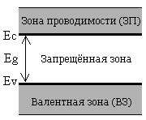
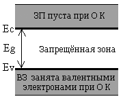
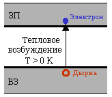

Введение
(Энергетическая зона,Уровень Ферми, и Работа по Примесной концентрации )
Ознакомьтесь с апплетом и введением. Студенты, ознакомленные с сутью зонной проводимости, могут не читать Введение и перейти непосредственно к Заданию. Другие студенты должны прочитать Введение и потом перейти к Заданию

Определение Энергетической зоны: Энергетическая зона твёрдого тела
полупроводникового кристалла состоит из Зоны проводимости, Валентной зоны,и
Запрещённой зоны. Носители заряда - электроны - существуют в зоне проводимости(ЗП);
другие носители заряда - дырки - существуют в валентной зоне (ВЗ); и эти две зоны
(ЗП & ВЗ) разделены запрещённой зоной. Нижний уровень ЗП называется дном
зоны проводимости, Ec, что соответствует потолку запрещённой зоны;
верхний уровень ВЗ называется потолком валентной зоны, Ev, что
соответствует дну запрещённой зоны.
В энергетических зонах(ЗП и ВЗ), квант энергии механического тела существует в
различных состояниях, как в 'вертикальной' шкале энергии, так и в 'горизонтальном'
пространственном измерении. При приложении электрического поля или при тепловом
движении, носители заряда движутся к соседнему (как по энергиетической шкале, так и
по пространственному измерению) достижимому состоянию. Внутри запрещённой зоны нет
возможных состояний для движущихся носителей. Однако, энергетические состояния,
связанные с донорными и акцепторными примесями,существуют внутри запрещённой зоны
так же, как энергетические состояния действуют в роли носителей заряда или центров
рекомбинации.
Носители заряда в Энергетической Зоне Собственного Полупроводника. Собственный
полупроводник – это чистый материал без каких-либо химическиих примесей.
При 
абсолютном нуле температуры носителей заряда нет. То есть, в ЗП электронов
нет, а ВЗ полностью занята валентными элктронами (и поэтому нет незаполненных
состояний или дырок). Заметьте, что валентные электроны идентичны ковалентным связям
и не являются подвижными (они просто локализованы).

При определённой температуре, тепловая энергия может нарушить некоторые ковалентные
связи, которые заключают свободные электроны, ранее связанные, или локализованные в
ковалентные связи. Так, для запрещённой зоны это значит, что валентный электрон (в
ВЗ, локализованнй и не движущийся), термически возбужднный и направленный в ЗП (где
электрон подвижен), оставляет незанятое состояние в валентной зоне. Незанятое
состояние в валентной зоне зовётся дыркой. У дырок эффективный заряд
положителен и равен +q. Ковалентная связь, будучи однажды нарушенной,
эквивалентна одному электрону в зоне проводимости плюс одному незанятому состоянию
(или дырке) в валентной зоне. В собственном полупроводнике, каждому электрону
соответствует дырка (пустое состояние в ВЗ). Поэтому концентрация электронов равна
концентрации дырок, и эта концентрация называется концентрацией собственных
носителей, ni.
Носители заряда в Энергетической Зоне Несобственного Полупроводника. –
Взаимная концентрация электронов и дырок контролируется разновидностью и
концентрацией примесных атомов, которые умышленно вводятся (или легируются) в
материал в течение или после роста кристалла. Химические примеси, вносящие вклад в
проводимость электронов, называются донорными примесями или просто донорами;
а примесные атомы, которые забирают электрон из полупроводника, называются
акцепторными примесями или акцепторами. К примеру, для кремния(Si)
донорами являются мышьяк(As), сурьма(SB), а акцептор - бор(B).
Полупроводник, легируемый донорами - это так называемый полупроводник n-типа.
В полупроводнике n-типа электроны - основные носители заряда и концентрация
электронов n равна примесной концентрации доноров минус концентрация
акцепторной примеси.
В полупроводнике n-типа, дырки - основные носители заряда и концентрация
дырок p равна примесной концентрации акцепторов минус примесная
концентрация доноров. Концентрация неосновных носителей заряда определяется
так называемым Законом Активных Масс: n *
p = ni2.
Уровень Энергии Ферми и Концентрация Носителей. – При термодинамическом
равновесии концентрации электронов и дырок в полупроводнике могут быть получены из
физического параметра, называемого Уровень Энергии Ферми, Ef.
Для большинства полупроводников, Ef находится в ширине запрещённой зоны , то есть,
Ef находится ниже Ec и выше Ev: Ec > Ef > Ev.
Концентрации электронов и дырок в полупроводнике определяются при помощи Ef так:
p = ni exp[-(Ef-Ei)/kT] где